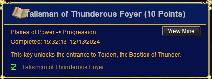
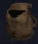
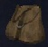
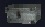

The complete checklist of flags, bosses, and quests required to unlock every plane
Progression Flags
Keys
Quest Items
Tradeskill Armor
Raids
Guide Overview – Read First!
1) The format for this guide is:
NPC dialogue or zoning steps
Boss kill / fight steps
Some steps are not strictly required flags — only enough people need to do these to keep the raid moving forward.
This guide does not cover piggybacking. Generally, you can piggyback anywhere at the ratio of 1 unflagged character per 5 flagged.
2) Flagging issues arise for two reasons:
From not talking to the right NPC before or after killing a boss.
From not zoning into a zone from another when you first get a flag (i.e. you must zone into Halls of Honor from Plane of Valor after killing Aerin’Dar for the first time).
3) There are two key NPC’s in Plane of Knowledge: Seer Mal Nae`Shi and Grand Librarian Maelin.
Seer Mal Nae`Shi is located in the building next to the Plane of Tranquility zone. She can fix any flagging issues you may have if they get out of order.
Grand Libraria n Maelin is located at the top of of library elevator and is part of the flagging process. Mostly towards the later stages. He should at least be done before and after killing the Zek’s , and also after killing Saryrn. Possibly other times as well if you begin to run into flagging issues at any point. He cannot put your flags in order like the Seer can, but he is a common cause for flag issues.
If you are having a flagging issue you may have to go back and forth between Grand Librarian Maelin and Seer Mal Nae`Shi a couple times to fix your flags.
I recommend doing the steps below more than once throughout the flagging process. Especially if you begin to see “You’ve received a new checklist flag!” rather than “You’ve received a character flag!” :
Locate Seer Mal Nae`Shi in the Plane of Knowledge. Be sure to sit down. Say “guided meditation” to see the status of your current flags. Say “unlock my memories” to get your flags in order. You may have to say this a few times and may get more than 1 flag. Repeat the phrases until you get no more flags.
Say “Hail”, “what lore”, and “what information” to Grand Librarian Maelin at the top of the Plane of Knowledge Library elevator. You may have to say this a few times and may get more than 1 flag. Repeat the 3 phrases until you get all flags.
4) Make sure to pick up your Charm item:
Intricate Wooden Figurine
Say “craft” to Gram Dunnar in Plane of Knowledge to receive Intricate Wooden Figurine. MAP
Say “I have stories” to Gram Dunnar to receive free AA and Charm stat upgrades as you progress. Typically I do this every time I gain access to a new zone. I believe you get 7 AA total, but that could be off.
5) Now we can move onto the actual flagging process:
NPC dialogue or zoning steps
Boss kill / fight steps
Some steps are not strictly required flags — only enough people need to do these to keep the raid moving forward.
Flag Checklist
Plane of Disease
Say “what ward” to Adler Fuirstel in Plane of Tranquility outside Plane of Disease (You’ve received a character flag!)
Kill Grummus and Hail a planar Projection (You’ve received a character flag!)
Jump into pit that leads into Crypt of Decay from Plane of Disease.
Plane of Justice
Speak to Mavuin in Plane of Justice. say “information” to receive flag (You’ve received a character flag!)
Complete 1 of the 6 Trials in Plane of Justice, Loot Mark of XXX from trial boss
Say “mavuin sent me” to one of the “The Tribunal” in the trial room. (You’ve received a character flag!)
Go back to Mauvin and Hail him to receive a flag. (You’ve received a character flag!)
Plane of Innovation
Optional – Kill Xanamech Nezmirthafen to get factory door key. At least 1 person will need this. Guide HERE.
Say “I will test the machine” to Giwin Mirakon inside the factory door. (You’ve received a character flag!)
Kill Manaetic Behemoth and Hail Giwin Mirakon (he spawns near boss room) to receive character flag. (You’ve received a character flag!)
Plane of Nightmare
Say “Hail”, then “tortured by nightmares” to Adroha Jezith in Plane of Tranquility in the Sick Bay. (You’ve received a character flag!)
Complete Hedge Maze in Plane of Nightmare. Hail Thelin Poxbourne at the end of the event to zone out. (You’ve received a character flag!)
Kill Terris Thule in Plane of Nightmare B and Hail a planar projection. (You’ve received a character flag!)
Go back to Plane of Tranquility and Hail Elder Poxbourne. (You’ve received a character flag!)
Crypt of Decay
Hail Elder Fuirstel in Plane of Tranquility in the Sick Bay. Must have completed Grummus Flag to get a response. (You’ve received a character flag!)
Complete Carprin Event and Hail Tarkil Adan in Crypt of Decay to gain Access to Lower Floor. (Key to the lower depths of the Ruins of Lxanvom Keyring) (You’ve received a character flag!)
Complete Bertoxxulous Event in Crypt of Decay and Hail a planar projection. (You’ve received a character flag!)
Hail Elder Fuirstel again in Plane of Tranquility in the Sick Bay. (You’ve received a character flag!)
Plane of Torment
Note: To be able to speak to the NPCs in Plane of Tranquility to start the Torment flagging process you need to have completed PoDisease/Crypt of Decay/PoNightmare flags correctly. You can still kill Keeper of Sorrows and Saryrn ahead of time if you get piggied into PoTorment but you’ll need to fix your flags afterwards. The person requesting the Keeper of Sorrows mini-mission must be fully flagged up to this point to request it (All up to and including both Terris Thule and Bertoxxulous, and subsequent dialogue). This is where a lot of people get their flags messed up.
Say “i will go” to Fahlia Shadyglade in Plane of Tranquility. She is in the Sick Bay. (You’ve received a character flag!)
Optional – Quest for A Screaming Sphere (Key) to open the door to Saryrn’s Tower in Plane of Torment. Only 1 person needs this. Guide HERE.
Complete the Keeper of Sorrows Event in Plane of Torment and Hail Tylis Newleaf who spawns at the end of the event. (You’ve received a character flag!)
Kill Saryrn in Plane of Torment and Hail A Planar Projection. (You’ve received a character flag!)
Go to Plane of Tranquility and Hail both Fahlia Shadyglade and Tylis Newleaf in the Sick Bay. Can this be skipped?
Plane of Storms
Complete Askr the Lost’s Giant Collect Quest (Talisman of Thunderous Foyer Keyring). Guide HERE. (You’ve received a character flag!)
Zone into Bastion of Thunder via stone in the middle of the zone from Plane of Storms. (You’ve received a character flag!)
Plane of Valor
Optional – Obtain Crystalline Globe to open Aerin’Dar Door. At least 1 person will need this. Guide HERE.
Kill Aerin’Dar and Hail a Planar Projection (You’ve received a character flag!)
Zone into Halls of Honor via the Plane of Valor underground tunnel entrance. (You’ve received a character flag!)
Bastion of Thunder
Optional – At least 1 person in the raid must be able to activate the stone to Agnarr’s Chamber using the Symbol of Torden Key. Guide HERE
Complete Agnarr the Storm Lord event then say “I will follow the path of the Fallen.” to Karana (You’ve received a character flag!) Note: To zone out say “Send me on my path.” to Karana
Halls of Honor (HoHA)
Complete Trial 1 (Northeast Trial – Dragon) then Hail Trydan Faye to receive flag emote: An ethereal mist descends from the air and surrounds your very being. Your body begins to emanate with the power of Trydan Faye.
Complete Trial 2 (Northwest Trial – Save Villagers) then Hail Rhaliq Trell to receive flag emote: An ethereal mist descends from the air and surrounds your very being. Your body begins to emanate with the power of Rhaliq Trell.
Complete Trial 3 (Southeast Trial – Save Single Villager) then Hail Alekson Garn to receive flag emote: An ethereal mist descends from the air and surrounds your very being. Your body begins to emanate with the power of Alekson Garn.
Temple of Marr (HoHB)
Kill Lord Mithaniel Marr in Halls of honor B and Hail A Planar Projection (You’ve received a character flag!)
Plane of Tactics
Kill Vallon Zek and Hail A Planar Projection (You’ve received a character flag!)
Kill Tallon Zek and Hail A Planar Projection (You’ve received a character flag!)
Kill Rallos Zek and Hail A Planar Projection (You’ve received a character flag!)
IMPORTANT: If you cannot zone into the Elemental Planes and have completed all flags and dialogue above, then you’ll likely need to go back and forth between Grand Librarian Maelin (at the top of the library elevator in PoK) and Seer Mal Nae`Shi MULTIPLE (2-3) times to fix all your flags. Say “hail”, Say “what lore”, and “what information” to Grand Librarian Maelin multiple times each time you visit him. Say the phrases until you receive no more character flags. Then go back to Seer Mal Nae`Shi to fix your flags. Rinse and repeat until you receive no more flags from Grand Librarian Maelin, and Seer Mal Nae`Shi has no more flag “fixes” for you. Sometimes Grand Librarian Maelin will have even more flags for you after you speak to Seer Mal Nae`Shi, so be sure to go back!
Solusek Ro Tower
Kill all 5 Mini bosses and click through the stones after killing each one. You’ll also need all flags up to Rallos Zek to zone into Solusek Ro’s chamber. (5x You’ve received a character flag!)
Xuzl
Arlyxir
Jiva
Rizlona
The Protector of Dresolik
Kill Solusek Ro and Hail a Planar Projection (You’ve received a character flag!)
Drop down into Lava Pit in Solusek Ro’s chamber to zone into Plane of Fire (No Flag here).
Elementals
Plane of Fire
Kill Fennin Ro in Plane of Fire and Hail A Planar Projection to receive Globe of Dancing Flame.
Plane of Air
Optional – Obtain Wind Etched Key to zone up to Xegony Island. 1 person per group will need the key. Not part of Planar Progression but is needed to get up to Xegony Island. Quest Guide HERE.
Kill Xegony in Plane of Air and Hail A Planar Projection to receive Amorphous Cloud of Air.
Plane of Water
Kill Coirnav in Plane of Water and Hail A Planar Projection to receive Sphere of Coalesced Water.
Plane of Earth
Optional – Kill Tantisala Jaggedtooth in Plane of Earth A. Loot Gem-Etched Key. Only 1 person needs this to open the door to tunnel area.
Complete the 4 ring events in Plane of EarthA to spawn A Mystical Arbitor of Earth. Kill it and Hail A Planar Planar Projection to receive Passkey of the Twelve on your Key Ring. Click the door nearby to enter Plane of Earth B.
Kill The Rathe Council in Plane of Earth B and Hail A Planar Projection to receive Mound of Living Stone.
Plane of Time
Optional – Craft Odylic Vial. Only 1 person needs this. It is a tradable 4-slot container
Combine Globe of Dancing Flame, Amorphous Cloud of Air, Sphere of Coalesced Water, Mound of Living Stone in Odylic Vial to create Quintessence of Elements.
Go to Plane of Innovation with your Quintessence of Elements. Say “yes” to Chronographer Muan to port up to PoTime Clocks. Say “researched” to Loreseeker Maelin. Click machine to zone into Plane of Time.
A fully flagged character looks like this when speaking to the Seer; this means if you see any of these emotes that’s the end of that flagging line:
Key Quests
Key Quest: The Crystalline Globe
Crystalline Globe – Key to Aerin`Dar Plane of Valor
To complete this quest you’ll need to be fully flagged for Plane of Valor.
There are six quest items that you should farm upfront before beginning any quest dialogue. 1-4 drop in the bottom/south section of the zone, while 5 and 6 drop from the top/north.
Planarian Larvae’s Heart : Drops from a festering worm, a planarian larvae. These mobs can be found scattered throughout the bottom section of the zone. They are mostly around undead towers and the river shore. Rare Drop.
Razorfiend’s Heart: Drops from razorfiends in the caves on southwestern side of the zone. Uncommon Drop.
Piece of the Crystalline Globe (Staff Icon): Drops from a Gamite Frog along the river shore in the bottom section of the zone. Rare Drop.
Piece of the Crystalline Globe (Gem Icon): Drops from an Undead Vassal in the undead ruin buildings on the bottom section of the zone. Rare Drop.
Crystalline Spider’s Heart: Drops from A Crystalline Arachnae. These spiders are all over the North/Top area of the zone. Common drop.
Piece of the Crystalline Globe (Orb Icon) – Drops from A Luminii Crawler, a named crawler in the North/Top section of the zone. PH can be any crawler. Always Drops.
Once you have obtained all 6 items, you can move onto the dialogue and quest turn-in.
WARNING: This quests dialogue is VERY sensitive. Doing one thing wrong can cause an NPC not to respond. If you turn in the items while an NPC is unresponsive, you will lose your items and have to get them again. Follow along and you shouldn’t have any issues. If something seems off or isn’t working, relog your character and restart the dialogue from the start
A. Go to Sergeant Johson Popoah (loc -961, -523). He is in the tent area. Hail him TWICE. Do not respond to his text dialogue until after the second Hail.
You say, ‘Hail, Sergeant Johson Popoah’ Sergeant Johson Popoah says ‘State your business or leave our [compound].’
You say, ‘Hail, Sergeant Johson Popoah’ Sergeant Johson Popoah says ‘Leave now before there is bloodshed.
Say “compound”Sergeant Johson Popoah says ‘This is the primary command center for Che Virtuson. We fall under the leadership and guidance of Captain Ryglot. I must now ask you to leave.’
B. Speak to Paralin Notion (loc -961, -523) who is right behind Sergeant Johson Popoah
You say, ‘Hail, Paralin Notion‘ Paralin Notion says ‘You’re either [brave], or you’re [stupid].’
Say “brave”At this point Paralin does not always respond. This is normal
Say “I will help your company“Paralin Notion says ‘We’re a part of the Battalion of Marr. We’re soldiers from Che Virtuson. We were dispatched to this part of the Plane of Valor to eliminate an age old target. Unfortunately, due to some recent events our mission has been placed on hold and our [squad] has been asked to remain behind.’
Say “squad“Paralin Notion says ‘We are a part of Ducee Tapferson. Our squad is known for our bravery. We were successful in capturing this [razorfiend] earlier today. You’ve shown some bravery as well my friend and that is the reason I request your [assistance].’
Say “razorfiend“Paralin Notion says ‘These vile beasts live in the caves west of here.’
Say “assistance“Paralin Notion says ‘Many of us here are anxious to leave. Many wish to regroup with the rest of our company. Others wish to go back to the Halls to complete the [Trials].’
Say “trials“Paralin Notion says ‘The Trials are overseen by the Heroes of Marr. It’s these Trials that allow us to rise in rank. Only those who have passed the trials are able to enter the Temple of Marr. Now if you wish to aid us I must ask you to do a few [things].’
Say “things“Paralin Notion says ‘You must find the Master Sergeant and tell him that you are here to aid the cause.’
C. Go to Master Sergeant Aaramis Daryln (loc +446, -50) in the Fort.
Do NOT hail him!
Say “I am here to aid the cause”Master Sergeant Aaramis Daryln looks you over and says in a deep voice ‘What could you possibly do to aid our cause. Perhaps you think you can slay [Aerin`Dar] himself?’ The Master Sergeant begins to laugh uncontrollably. ‘I suggest you go back to whoever filled your head with this nonsense and stop wasting my time.’
Say “Aerin‘Dar”Master Sergeant Aaramis Daryln says ‘I don’t have time to explain the glass dragon to you. Leave before I get angry.’
D. Go back to Paralin Notion (loc -961, -523)
Say ‘Hail, Paralin Notion‘Paralin Notion says ‘I’m sorry the Master Sergeant was unable to help you. Perhaps you should [prove] yourselfbefore you attempt to jump ‘into the fire’ so to speak.’
Say “prove“Paralin Notion says ‘We’ve been running into a lot of problems lately with the razorfiends and the planarian larvae. Many soldiers have been getting sick because of the infestations that they cause. Capture the hearts of a razorfiend, a crystalline spider and a planarian larvae and bring them back to me. Our squad had enough problems capturing this small razorfiend here. This will become your first so called ‘Trial’ ______. It should be enough to prove your worth.’
Turn in the 3 hearts to Paralin Notion, Planarian Larvae’s Heart, Razorfiend’s Heart, Crystalline Spider’s Heart.Paralin Notion looks at you with surprise. ‘Very good my friend. You’ve definitely proven yourself. Find the Master Sergeant. He should be able to help you this time.’You gain experience!
E. Go back to Master Sergeant Aaramis Daryln (loc +446, -50) in the Fort.
Say ‘Hail, Master Sergeant Aaramis Daryln’Master Sergeant Aaramis Daryln says ‘I heard what you did for Paralin Notion. That’s quite a noble feat indeed. Perhaps we can use your help. However, you’ll need to talk to the Captain first. After all, I can’t have you walking in the [glass lair] without permission.’
Say “glass lair“Master Sergeant Aaramis Daryln says ‘It’s the prison that [Aerin`Dar] has been encased in for many generations.’
Say “Aerin’dar”Master Sergeant Aaramis Daryln says ‘Aerin`Dar is the crystalline dragon who once roamed the Plane of Valor. During a severe rainstorm it was struck down to the very core of its being. The mighty Aerin`Dar fell from the sky and landed in what is now known as the Glassy Wasteland. Planarian larvae began to infest its body eventually turning its pure heart to evil. Our [company] was dispatched to this region of Valor to eliminate the threat.
Say “company”Master Sergeant Aaramis Daryln says ‘My squad of men are a part of Che Virtuson. However, we specifically are a part of Ducee Buled. We fall under the command of Captain Ryglot. Our [mission], for the time being, is simple. But we’ve run into some problems lately.’
Say “mission”Master Sergeant Aaramis Daryln says ‘Not too fast ______. You’ll have to speak to the Captain about that. I’m not at liberty to divulge that information at this time. That information is classified. I can tell you, but then I’d have to kill you.’ Aaramis laughs. ‘Go to Captain Ryglot and he’ll be able to fill you in with all the details.’
F. Go to Captain Ryglot Cupperhide in the tents (Loc -1010, -664).
Say, ‘Hail, Captain Ryglot Cupperhide‘ Captain Ryglot Cupperhide says ‘I am very [busy] at the moment. Perhaps you should come back at another time ______.’
Say “busy“Captain Ryglot Cupperhide says ‘I can’t go into any great detail, but the Crystalline Globe was taken from our command structure. It’s believed to have been separated into three pieces. Unfortunately, we’re having a lot of trouble relocating it. Perhaps you’d like to [help].’
Say “help“Captain Ryglot Cupperhide says ‘That’s good to hear ______. I wish we had more soldiers like yourself willing to help. I’m going to need you to locate the missing pieces of the globe and bring them back to me. After you’ve acquired the pieces perhaps you’d be able to rally enough people to lend us a hand with another [mission] objective we’ve been unable to fulfill do to our diminished numbers.’
Say “mission“Captain Ryglot Cupperhide says ‘Well, I can’t go into any details as to our main purpose is, but one of our missions was to exterminate the crystalline dragon. However, due to our company being split we are unable to go forward with this part of the operation. It has been placed on hold, pending the outcome of the [war].’
Say “war“Captain Ryglot Cupperhide says ‘Unfortunately, that is one of the things that I’m unable to speak of at this time. However, if you are [willing] to help rally some people together I may be able to release some more information to you.’
Say “willing“Captain Ryglot Cupperhide says ‘Well, that’s good to hear. Bring me back what I’ve requested and we’ll talk then.’
Turn in the 3 pieces of the Globe to Captain Ryglot Cupperhide, Piece of the Crystalline Globe (Staff Icon), Piece of the Crystalline Globe (Gem Icon), Piece of the Crystalline Globe (Orb Icon) to receive your Crystalline Globe!Captain Ryglot Cupperhide looks up at you in surprise. ‘I can’t believe you brought the missing pieces back to me so quickly. I have a team of men who have been looking for these pieces for weeks now. That’s quite a feat. Unfortunately, I will be unable to make use of the Crystalline Globe at this time. A message has been dispatched to my platoon asking us to return to the Halls of Honor. It looks as if we’ll be joining up with the rest of our company fairly soon. Keep the globe. If you’re able to rally enough people together to take on Aerin`Dar then perhaps you’ll be able accomplish an objective that our platoon was unable to do. I must go now. Good luck to you ______.’
You gain experience!
Key Quest: The Symbol of Torden
Symbol of Torden – Bastion of Thunder (BoT) Agnarr’s Tower Access
You will need to obtain 5 items from the upper towers of BoT to get access to Agnarr’s Tower.
Note: Only one person per raid needs this key to port up Agnarr’s Tower.
Blizzard Sphere – Trash drop from Ice Wing. Uncommon Drop.
Lightning Sphere – Trash drop from Fire Wing. Uncommon Drop.
Sandstorm Sphere – Trash drop from Earth Wing. Uncommon Drop.
Tornado Sphere – Trash drop from Air Wing. Uncommon Drop.
Unadorned Symbol of Torden – Drops from any of the 4 tower bosses. You only need to kill one. Always Drops.
Tower Bosses
Auliffe Chaoswind
Brynju Thunderclap
Eindride Icestorm
Kuanbyr Hailstorm
Combine the 4 spheres in the Unadorned Symbol of Torden to receive Symbol of Torden!
Key Quest: The Wind Etched Key
Wind Etched Key – Key to Xegony’s Island
This key allows you to click the rainbow up to Xegony’s Island in Plane of Air. One person can port their entire group (up to 6 people).
Doing this quest requires that you be flagged for the Elemental Planes via the flagging progression system. If you are not, you won’t be able to receive the bag required to do the key combine because the NPC who gives it will not speak to you.
You need to obtain 5 items:
Pouch of Swirling Winds
Mystical Essence of Wind
Mystical Essence of Smoke
Mystical Essence of Mist
Mystical Essence of Dust
Combine all 4 Mystical Essences into the Pouch of Swirling Winds to receive Wind Etched Key.
Pouch of Swirling Winds
Say “Plane of Air” to Sarhya the Dawnbreeze to receive Pouch of Swirling Winds. You must be Elemental flagged to receive this bag. Sarhya the Dawnbreeze is located at the Plane of Air zone in Plane of Tranquility.
Mystical Essences
The Mysical Essences drop from various Wing Bosses called the Avatar’s. You must first complete a ring event to spawn each Avatar. The Avatar’s are triggered from the corresponding ring:
Mystical Essence of Wind – Stormrider Ring Event – Spawns Avatar of Wind
Mystical Essence of Smoke – Elemental Ring Event – Spawns Avatar of Smoke
Mystical Essence of Mist – Phoenix Ring Event – Spawns Avatar of Mist
Mystical Essence of Dust – Spider Ring Event – Spawns Avatar of Dust
Below is a map of where each is located:
Key Quest: Talisman of the Thunderous Foyer
Talisman of Thunderous Foyer Guide
Bastion of Thunder Access
This is not an actual key but a PoP flag that shows up as an achievement. It is a required part of Planar Progression. The quest takes place in Plane of Storms. When PoP first releases you’ll want a group for most of this, and 1-2 groups for the named.

Step 1 – Farming
You’ll first need to farm the following items:
1x Storm Giant Head
1x Storm Volaas Beard
1x Storm Satuur Sash
1x Storm Taarid Bone
2x Esoteric Medallion
Storm Giant Head
This drops off giants in any of the 3 giant camps in Plane of Storms. It is fairly common.
Storm Volaas Beard
This drops off any of the giants in the Southwest camp. It is uncommon.
Storm Satuur Sash
This drops off any of the giants in the Northeast camp. It is uncommon.
Storm Taarid Bone
This drops off any of the giants in the Far West camp. It is uncommon.
Esoteric Medallion (Collect 2)
These drop off named giants in each of the camps. You’ll need 2. They are Lore, but ID differently (North, South, and West). This means you must get 1 from at least 2 of the 3 camps. The mini bosses are 1-2 groupable, with the exception of the Lord’s, which are raid bosses, so it is not recommended to trying to 1 group those.
Mobs that drop them are:
Southwest Camp
Faruek the Bold
Jeplak, Lord of Srerendi
Paruek the Strong
Northeast Camp
Laruken the Rigid
Neffiken, Lord of Kelek`Vor
Zertuken the Unyielding
Far West Camp
Gurebk, Lord of Krendic
Pendubk the Turbulent
Solnebk the Unruly
Step 2 – Dialogue
Locate Askr the Lost (-1250, -2600) and give him Storm Giant Head.
Say “continue” twice to receive Askr’s Bag of Verity (container).
Combine Storm Volaas Beard, Storm Satuur Sash, and Storm Taarid Bone in Askr’s Bag of Verity (container) to create Askr’s Sealed Bag of Verity.
Give Askr’s Sealed Bag of Verity to Askr to Lost (receive character flag)
Say “bastion of thunder” to receive another Askr’s Bag of Verity (container).
Combine 2x Esoteric Medallion in Askr’s Bag of Verity (container) to receive Esotoric Meld.
Give Esotoric Meld to to Askr to Lost (receive character flag)
Run to the middle of the zone and click on the portal to Bastion of Thunder (receive character flag)



Watch
Ep0/19 *WATCH FIRST* PoP Raid Flag Pilot EverQuest TLP Mangler Ayonic — Ion Blaze Gaming
Planes of Power Progression Guide: Full Flagging Walkthrough (Archived) — Broken Stoic
Big Changes in Planes of Power | EverQuest — Ion Blaze Gaming
Planes of Power Flagging Issues? | EverQuest — Ion Blaze Gaming
Sources: eqprogression.com guide pages — Planes of Power Planar Progression Flagging, Aerin`Dar Key (Crystalline Globe), Symbol of Torden (Agnarr’s Tower Access), Wind Etched Key (Key to Xegony’s Island), and Talisman of the Thunderous Foyer (Bastion of Thunder Access). Videos embedded from YouTube.